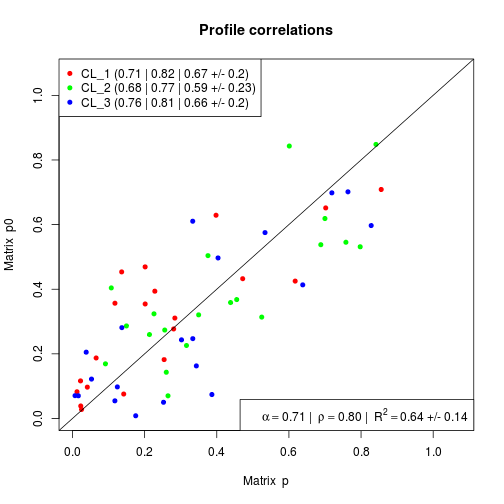

gedAlgorithm.DSection(..., maxIter = 500L, p0, data = NULL, nBurnIn = 4 * maxIter,
W0 = max(100, nbasis(seed)), W_proposal = 100, samplep = TRUE)
S3 (ged_DSection)
`csTopTable`(x, coef = 1L, decreasing = TRUE, ...)
DSection.p0 must be positive and add up to one.p0. Defines the peakedness of
Dirichlet density around p0. NOTE: keep W0 >= T.TRUE) or not (FALSE). SUGGESTED USE:
sample from the posterior (samplep = 1).ged.Estimates cell/tissue cell/tissue-specific expression
signatures, given proportion priors using the MCMC
approach from Erkkila et al. (2010), implemented
in Matlab and wrapped in CellMix by the function
DSection.
The S3 method csTopTable for DSection fits
computes nominal p-values (i.e. unadjusted) of
differential expression between cell type or group of
samples within each cell type, for deconvolution results
from the DSection algorithm.
Erkkila T, Lehmusvaara S, Ruusuvuori P, Visakorpi T,
Shmulevich I and Lahdesmaki H (2010). "Probabilistic
analysis of gene expression measurements from
heterogeneous tissues." _Bioinformatics (Oxford,
England)_, *26*(20), pp. 2571-7. ISSN 1367-4811,
# random global expressionx <- rmix(3, 50, 20)# extract true proportionsp <- coef(x)# add noisep0 <- scoef(abs(p + rmatrix(p, dist=rnorm, sd=0.15)))# check how noisy this makes the proportion estimatesprofplot(p, p0)
# deconvolve using DSection## Not run:# res <- ged(x, p0, 'DSection', maxIter=10, seed=12345)# head(basis(res))# # proportions are updated# !identical(coef(res), p0)# # check how better they are# profplot(x, res)## \dontshow{# stopifnot( !identical(coef(res), p0) )# stopifnot( nmf.equal(res, ged(x, p0, 'DSection', maxIter=10, seed=12345)) )# }# ## End(Not run)